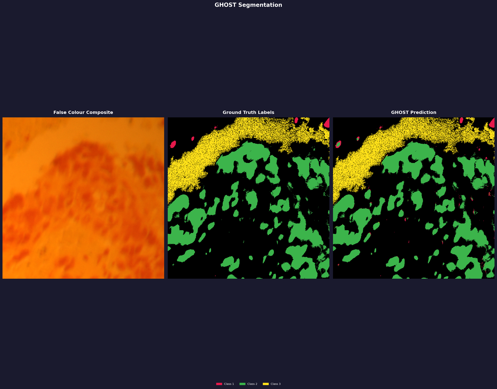

Performance Benchmarks.
| Dataset | Config | OA (%) | mIoU | Dice | Kappa | Time |
|---|---|---|---|---|---|---|
| Indian Pines | 32 base / 8 filters | 97.55 | 0.8027 | 0.8391 | 0.9721 | 77m |
| Indian Pines | 64 base / 32 filters | 97.52 | 0.8593 | 0.9038 | 0.9717 | 6h 2m |
| Salinas Valley | — | — | — | — | — | — |
| Pavia University | — | — | — | — | — | — |
Tested on an NVIDIA RTX 3050 (6 GB VRAM) · --train_ratio 0.2 --val_ratio 0.1 --seed 42, forest routing. Standard benchmark datasets available from the GIC group at UPV/EHU. Salinas Valley and Pavia University pending re-run.
Field Deployment.

Lung Cancer (LUSC).
Applied to lung squamous cell carcinoma hyperspectral pathology slides. GHOST segments tissue regions across 61 spectral bands — the same binary trained on remote sensing data, zero re-configuration.
View Dataset →
Mars CRISM.
Mineralogical mapping of the Martian surface from MRO CRISM data. GHOST identifies phyllosilicates, olivine, and carbonates — revealing the aqueous history of the Red Planet.
Learn More →RSSP Strategy.
Recursive Spectral Splitting with Parallel Forests builds a dynamic divide-and-conquer hierarchy over your class set. Spectrally similar classes are kept together and handled by specialist ensembles — giving every minority class a dedicated model rather than drowning in a global softmax.
No PCA Required.
Continuum Removal normalizes away brightness and albedo variations, isolating intrinsic absorption feature shape. All bands preserved — no dimensionality choices, no information discarded.
Fully Data-Agnostic.
Band count, class count, spatial dimensions — all read from the file at runtime. Nothing is hardcoded. The same binary handles remote sensing, medical pathology, and planetary science.
Start here.
Install.
Install from PyPI. Indian Pines sample data is bundled — run ghost demo to get the file paths.
pip install ghost-hsi
ghost demoTrain.
Run the full GHOST pipeline. Use the paths printed by ghost demo.
ghost train_rssp \
--data /path/to/Indian_pines_corrected.mat \
--gt /path/to/Indian_pines_gt.mat \
--loss dice --routing forest \
--base_filters 32 --num_filters 8 \
--forests 5 --leaf_forests 3 \
--epochs 400 --patience 50 --min_epochs 40 \
--out-dir runs/my_experimentPredict.
Run inference on the test split and compute metrics.
ghost predict \
--data /path/to/Indian_pines_corrected.mat \
--gt /path/to/Indian_pines_gt.mat \
--model runs/my_experiment/rssp_models.pkl \
--routing forest --out-dir runs/my_experimentVisualize.
Generate a 3-panel segmentation figure: false colour composite, ground truth, GHOST prediction.
ghost visualize \
--data /path/to/Indian_pines_corrected.mat \
--gt /path/to/Indian_pines_gt.mat \
--model runs/my_experiment/rssp_models.pkl \
--dataset indian_pines --routing forest \
--out-dir runs/my_experiment